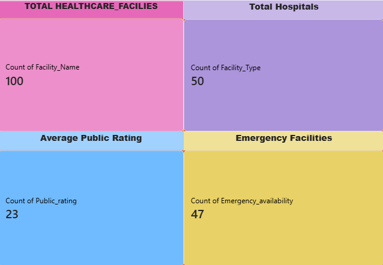
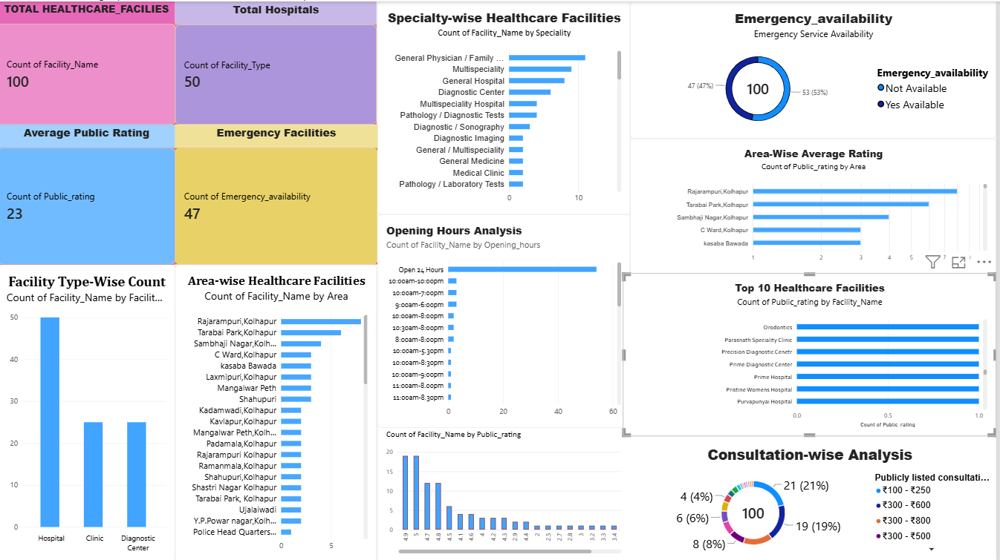
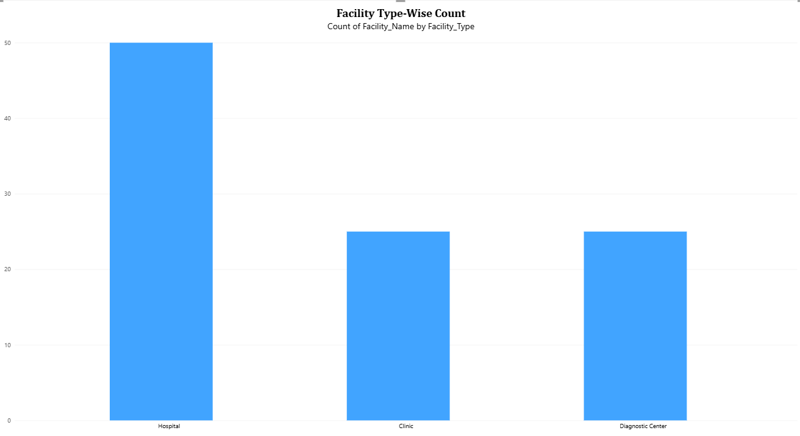
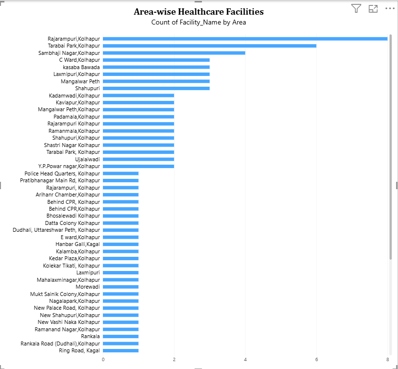
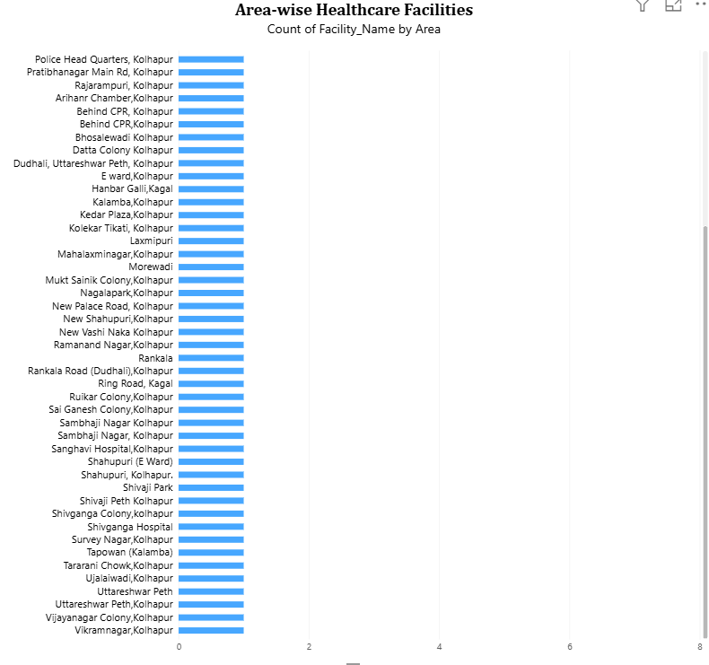
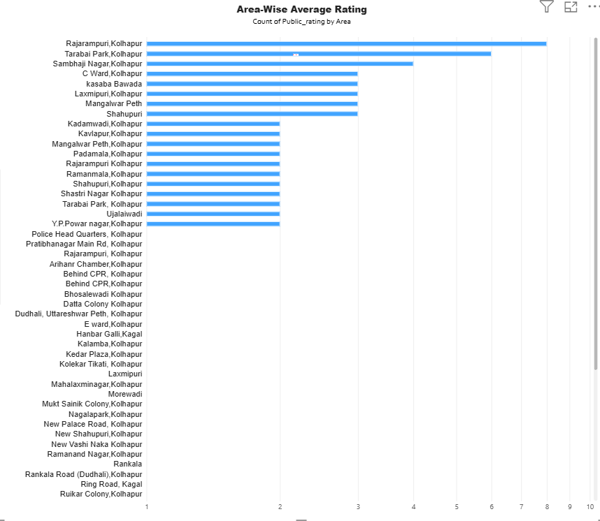
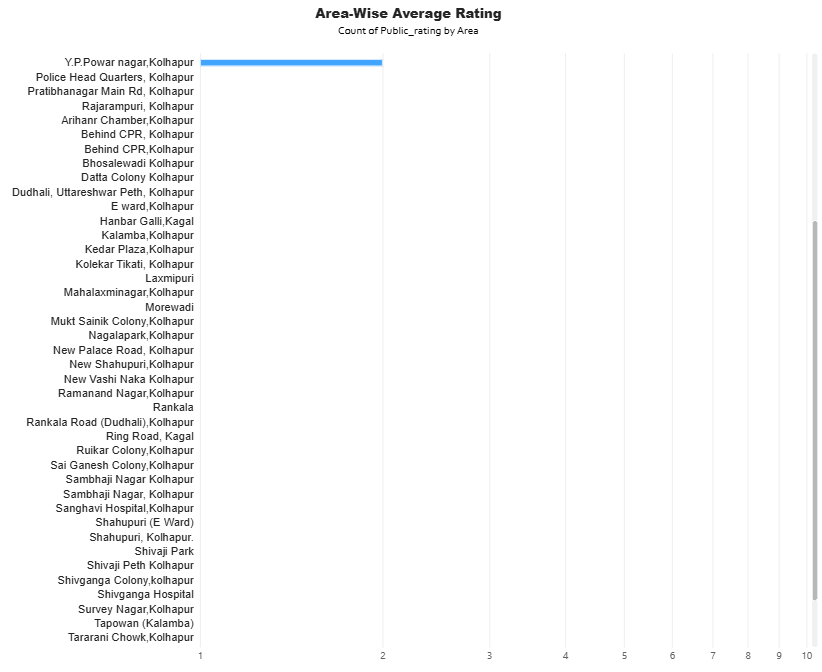
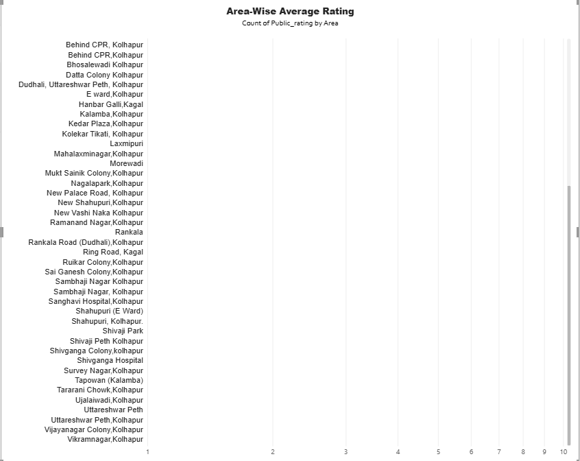
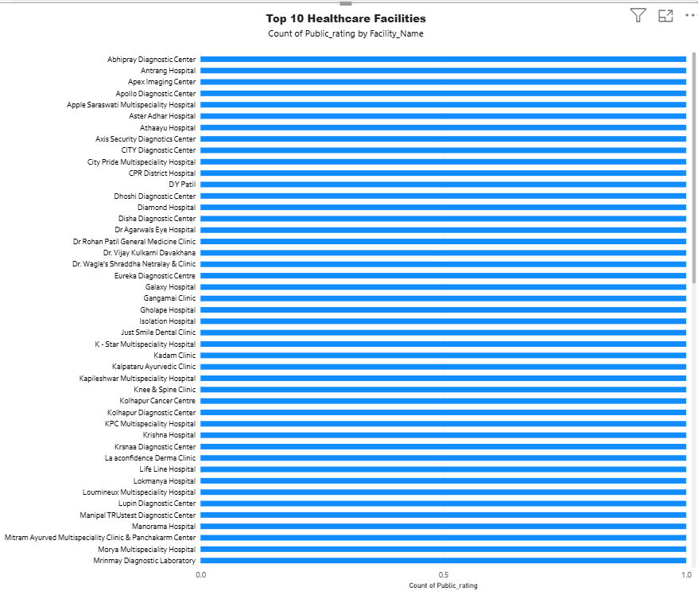
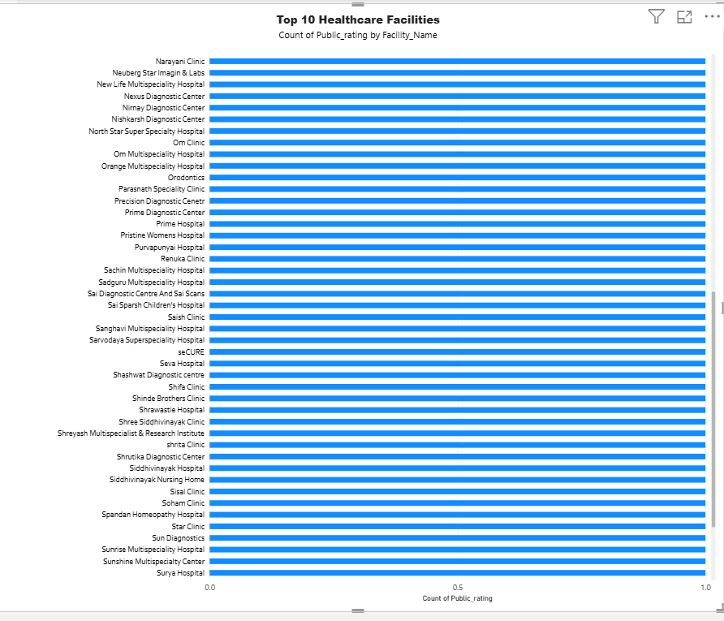

EDA 1 – Facility Type-wise Distribution
Distribution of hospitals, clinics, and diagnostic centers.

Data Analytics and Business Intelligence Project
ZoyaSofts Industry-Ready Internship Project
The Local Healthcare Accessibility Analysis project examines publicly available information about healthcare facilities. It explores facility types, areas, specialties, public ratings, review counts, opening hours, consultation ranges, and recorded emergency service availability.
Prepared by: Sakshi Patil
College: D. R. Mane Mahavidyalaya, Kagal
Organization: ZoyaSofts
Privacy note: This project uses publicly available healthcare facility information and does not include patient records or private medical information.
The dataset contains 100 records and 10 columns covering healthcare facility details.
The dashboard presents healthcare facility information through visual summaries and charts.

The following sections present the analysis charts prepared for this project.
Distribution of hospitals, clinics, and diagnostic centers.

Healthcare facility distribution across different areas.

Comparison of facilities by their names.

Analysis of publicly listed healthcare facility ratings.

Exploration of publicly listed review counts.

Analysis of recorded opening hours.

Comparison of average public ratings by area.

Exploration of publicly listed consultation ranges.

Analysis of recorded emergency service availability.

This project demonstrates the use of SQL, Python, Matplotlib, and Power BI to organize, analyze, and visualize publicly available healthcare facility information.
The results should be interpreted within the limits of the available dataset. Missing information does not necessarily mean a service is unavailable, and additional research is needed to validate possible service gaps or business demand.